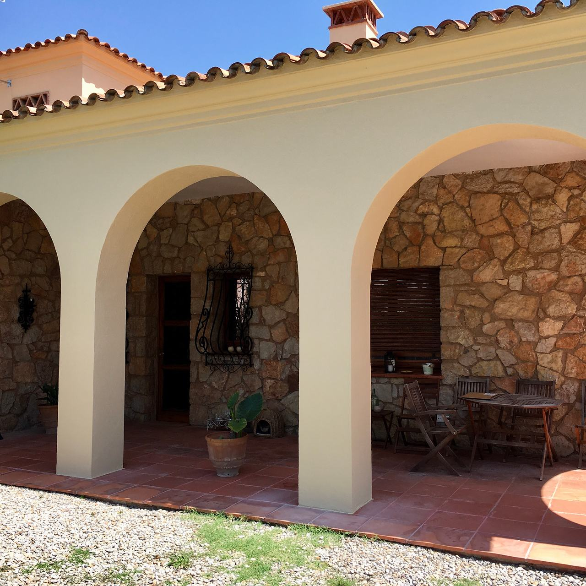

Acabats i pintura en edificis històrics
Una façana antiga respira: absorbeix i deixa anar humitat a través de la calç i de la pedra. Tractar-la bé és tornar-li el color i la integritat sense tancar-li el porus. Per això treballem amb morters de calç i amb silicats Keim.

Calç, silicat o pintura plàstica
L’elecció de l’acabat decideix quant dura una façana antiga. La pintura plàstica és la més habitual i, en un mur de pedra, maó o morter de calç, gairebé sempre la menys adequada.
| Pintura plàstica | Calç | Silicat (Keim) | |
|---|---|---|---|
| Com s’uneix | Forma una pel·lícula que s’adhereix a la superfície | Carbonata amb l’aire i s’integra al suport | Reacciona amb el suport mineral i s’hi uneix químicament |
| Transpirabilitat | Baixa: la humitat del mur queda atrapada al darrere | Molt alta | Molt alta |
| Color | Pigments orgànics que poden perdre vivesa amb el sol | Tons suaus, aiguades i veladures | Pigments minerals molt estables a la llum |
| Com envelleix | Butllofes i escrostonats quan el mur té humitat | Es desgasta a poc a poc i admet noves capes | Es manté molt de temps i es repinta sense decapar |
| On encaixa | Suports moderns i sense humitat | Arrebossats i estucs de calç, edificis molt antics | Arrebossats minerals, pedra, maó, estucs |
Una façana històrica, de dalt a baix
Inspecció i diagnosi
Fissures, despreniments, humitats, estat de cornises, balcons i elements de pedra. Si l’edifici ha passat la inspecció tècnica (ITE), l’informe és el punt de partida.
Cales i estudi de color
Sota les capes de pintura sol haver-hi el color original. Unes cales petites permeten trobar-lo i decidir si es recupera. En un edifici protegit, normalment el color l’ha d’aprovar l’ajuntament.
Sanejament
Es retiren els arrebossats buits i els morters de ciment incompatibles amb el mur, que tanquen la humitat dins del mur i hi aporten sals.
Reparació d’elements
Pedra, motllures, esgrafiats i reposicions en imitació de pedra, a més de la serralleria i la fusteria dels balcons.
Acabat
Amb morters de calç o amb silicats Keim, en el color aprovat i després de fer mostres a la mateixa façana.

2014
Rambla de Catalunya, Barcelona
En la remunta d’un edifici de la Rambla de Catalunya, els elements nous de la façana havien de quedar iguals que els antics. El nostre equip va imitar la pedra de Montjuïc en aquests elements perquè l’ampliació no es distingís de la façana original.
Pedra vista, calç i ferro
Porxos d’arcs de pedra amb murs emblanquinats, una façana en rehabilitació i un balcó de ferro de façana clàssica. Prem una foto per veure-la gran.
Sobre façanes antigues
Es pot pintar al silicat sobre pintura plàstica?
Directament, no: el silicat necessita un suport mineral amb què reaccionar, i la pel·lícula plàstica ho impedeix. Cal retirar la pintura antiga o fer servir un sistema de silicat específic per a suports amb restes orgàniques. Es decideix després de veure l’estat de la façana.
Què és la ITE i què té a veure amb la façana?
És la inspecció tècnica de l’edifici. A Catalunya és obligatòria per als edificis d’habitatges a partir dels 45 anys d’antiguitat, i l’informe classifica les lesions per urgència. Si assenyala despreniments o fissures a la façana, reparar el suport i tornar a pintar és la manera de resoldre’ls.
Es pot recuperar el color original de la façana?
Moltes vegades, sí. Amb cales petites en zones arrecerades (sota les cornises, darrere dels rètols, als racons dels balcons) sol aparèixer la seqüència de colors que ha tingut l’edifici. Amb això, i amb el que permeti l’ajuntament, es decideix quin color es recupera.
Necessito llicència per intervenir en una façana protegida?
Sí, gairebé sempre, i en edificis protegits pot caldre un informe dels tècnics municipals de protecció. La tramita la propietat o el seu tècnic; nosaltres aportem la descripció dels treballs, els materials i les mostres de color.
Una façana amb història?
Envia’ns fotos de la façana sencera i dels danys, l’adreça de l’edifici i, si el tens, l’informe de la ITE. Et direm com l’enfocaríem.